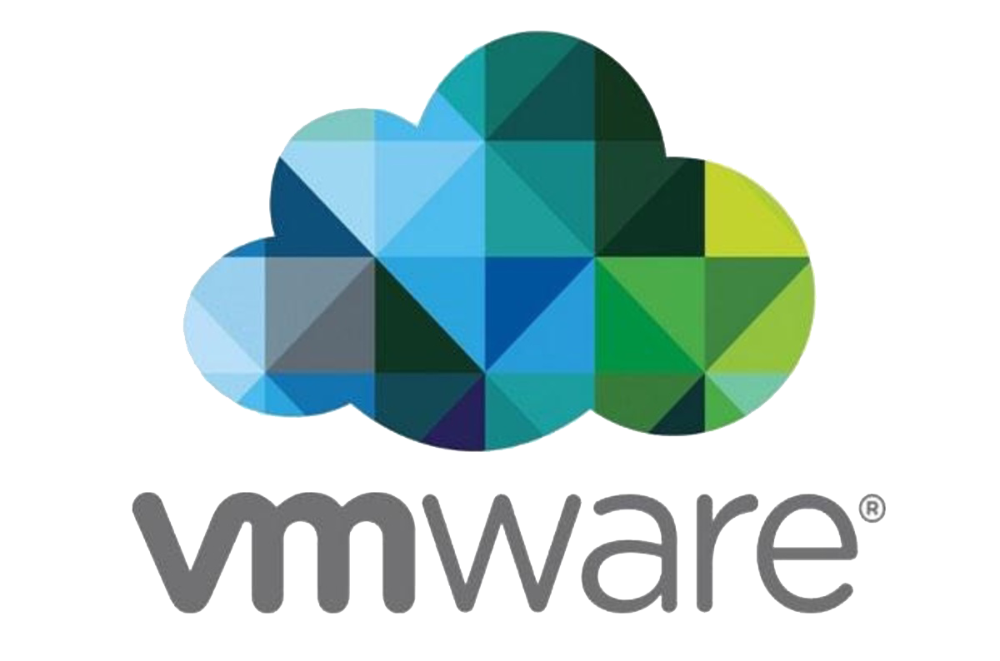
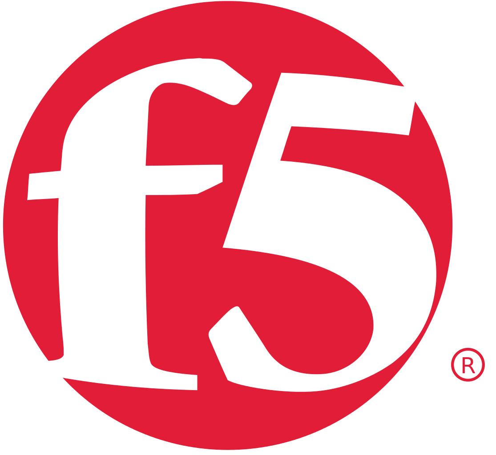

INFRASTRUCTURE
Work is easy when you have all tools around you!Virtualization
Organizations cannot afford not to virtualize their environment if they don’t want to risk having more business disruptions, more complex IT environments and unnecessarily high cost as most servers operate at less than 15 percent of capacity.
VMware, a global leader in virtualization and cloud infrastructure addresses these inefficiencies by allowing businesses to run more than one virtual system, multiple operating systems and applications on a single physical server as virtual machines, each with access to the underlying server's computing resources. Organizations can also evolve toward a fully virtualized software-defined data center architecture: virtualize networking, storage and security.
At Pufferfish Technologies, we provide virtualization solutions from VMWare and professional services, harnessing the skills and expertise of our people to help organizations design, provision and manage their virtual environments (server, network, desktop, cloud) thereby improving their overall efficiency at reduces cost, enabling faster workload deployment, increased application performance, and higher availability.


Converged Infrastructure
Take on the challenge of modern IT infrastructure demands with an agile, flexible and simple to manage cloud ready converged Infrastructure engineered to accelerate your workload and offer faster time to production. Converged systems are engineered to provide you with a high performing, cost effective and always available platform for running your business critical applications.
Pufferfish is a leading solution provider of some of the world's most advanced converged infrastructure featuring scale-out intelligent storage servers, state-of-the-art servers and an extremely high speed InfiniBand internal fabric that connects all servers and storage. This is achieved by seamlessly integrating enterprise-class compute, network, storage and virtualization technologies from industry leaders IBM, Hitachi, Dell EMC, Cisco and VMware. Thereby providing you with an agile Infrastructure that grows at your own speed at reduced cost.


Enterprise Storage and Archiving
Data is serious business in today’s financial landscape, and it’s growing exponentially at an accelerated pace which demands that how you store, secure and access your data is important.
Pufferfish Technologies provides a broad range of storage options to satisfy your most demanding requirements. Our offerings from leading industry vendors include SAN Storage, Object Storage, Flash Storage, Hybrid-Cloud and software-defined storage solutions for high-performance computing (HPC), big data and analytics to improve business results in a highly competitive market.
We are also in strategic partnership with Solix to help organizations efficiently manage the archival of inactive data from production database/application and relocating it into a secured archive repository where it may still be accessed by business users. We provide data archiving services for Oracle Flexcube, Finacle, Temenos T24 applications, databases and custom applications developed on heterogeneous databases.
Over the years, we have worked with organizations from various verticals like Access Bank to dynamically manage their enterprise workloads and data, simplify storage management, scale out data, achieve better resource utilization, cost reduction and support for existing infrastructure.
Enterprise Servers
IBM® Power Systems™, with IBM POWER8® provide a powerful, scalable and economical choice for clients that amass a lot of data and need more processing power while simultaneously increasing workload density and reducing datacenter floor space requirements. It is the first family of systems built with innovations that transform the power of computing, big data and analytics, mobile and cloud into competitive advantages in ways never before.
Pufferfish is happy to partner with IBM to provide you with IBM Power servers that are optimized for your compute-intensive performance demands of core-banking applications such as Finacle, Flexcube and MISYS, databases and analytics applications, and can flexibly scale to support the demands of your rapidly growing data.
Application Delivery Networking
As the leading System Integration Service Provider in Nigeria, Pufferfish understands and offers the best breed of Application Delivery Networking Solution for application/web servers loading balancing, application performance enhancement, and securing applications from Layer 2 to Layer 7 across different verticals.
F5 Networks is the global leader in Application Delivery Networking (ADN). Its F5 BIG-IP platform is a smart evolution of Application Delivery Controller (ADC) Technology that gives you a depth of understanding about your network’s application traffic and control over how it’s handled. It intelligently manages your chaotic volume of network traffic, selecting the right destination based on server performance, security, and availability.
